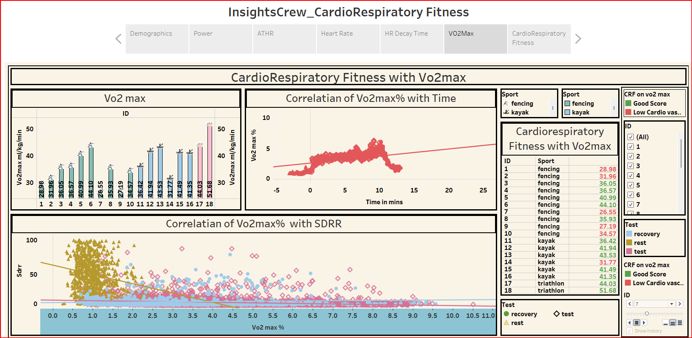

Cardio Respiratory Fitness in Athletes
Project Overview
Cardiorespiratory fitness is determined by the body's ability to consume, transport, and utilize oxygen during dynamic exercise. One of the most popular and widely used methods to measure cardiorespiratory fitness is the maximal oxygen uptake (VO2max) test, which is typically measured during a graded exercise test.Dataset Description
Cardiorespiratory measurement from graded cycle ergometer exercise testing is a method used to assess an individual's aerobic (cardiorespiratory) fitness level in our dataset. There are 18 athletes in the database, representing 3 sports. The first 10 athletes are from fencing, the next 6 are from kayak and the last 2 are from triathlon. Of the athletes, 11 have a healthy BMI ,5 athletes are overweight and both triathletes are underweight. The age in our dataset is 12-18 The athletes' heart rates were calculated during the test, recovery, and rest periods. The time column was initially given in seconds, but it was converted to minutes.Dataset Definition
1. ID: A unique identifier for each participant in the study. 2. age: The age of the participant in years. 3. Weight: The weight of the participant in kilograms. 4. Height: The height of the participant in centimeters. 5. P_vt1: The power output at the first ventilatory threshold during a graded exercise test. 6. P_vt2: The power output at the second ventilatory threshold during a graded exercise test. 7. sport: The type of sport or activity the participant usually engages in. 8. MaxHR: The maximal heart rate calculated from the standard formula of 220 – age (in years). 9. HRmax: The maximum heart rate achieved by the participant during the graded exercise test. 10. VO2max_abs: The absolute value of maximal oxygen uptake (VO2max) measured during the graded exercise test in millilitres of oxygen per minute (mL/min). 11. powermax: The highest power output achieved by the participant during the graded exercise test. 12. HRrest: The resting heart rate of the participant prior to the graded exercise test. 13. time: The duration of the graded exercise test in minutes. 14. Vo2inmL/Kg/min: The steady-state oxygen uptake during the graded exercise test in millilitres of oxygen per kilogram of body weight per minute. 15. Vo2inmL/Kg/min/2: The steady-state oxygen uptake during the last 2 minutes of the graded exercise test in millilitres of oxygen per kilogram of body weight per minute. 16. ATHR: The anaerobic threshold heart rate, which is the heart rate at which the body transitions from primarily aerobic to primarily anaerobic metabolism during exercise.Data Analysis
-

● Elite athletes in these sports can have VO2max scores in the range of 50-70 ml/kg/min or higher.
● VO2max% is a measure of aerobic fitness level as a percentage of maximum oxygen uptake capacity.
● Standard deviation of RR interval (SDRR) is a measure of heart rate variability (HRV).Higher HRV, as indicated by a lower standard deviation of RR intervals, suggests better cardiovascular health.Good scores for young athletes can range from 35-50 ml/kg/min.
● VO2max less than 35 may indicate low cardiovascular fitness and the inability to perform at a high level for extended periods of time.
● Participant IDs 1, 2, 7, 9, and 14 have low VO2max uptake.
● Participants IDs 17 and 18 have maximum VO2max uptake but are unable to perform for extended periods of time.So we extended our analysis further by calculating Cardiorespiratory Fitness Score
● Cardiorespiratory Fitness Score was calculated considering relative VO2max, PVt2, Pvt1, relative power max, Hrr120, Hrr60, time rest, time, Athr, RR interval, RR, HRmean, VO2mean, and PWC170.
● Participant IDs 3, 11, 12, 13, and 14 have good scores.
● The remaining participants have low scores, which may be due to factors such as a lack of regular exercise, poor nutrition, inadequate recovery, and other health issues.
Tools and Technologies used
-
• Tableau – Data visualization & dashboard creation
• SQL & Python – Data transformation & Cleaning
• Excel – Exploratory data analysis
Conclusion
The comprehensive analysis of the athletes' cardiorespiratory data reveals significant differences across sports and individual participants.
While triathlon athletes demonstrated the highest VO2max, their endurance capacities varied. A consistent relationship was observed between power output, weight, and heart rate in many participants. The data also revealed a positive correlation between power max and weight, and a linear relationship between power output and heart rate during exercise for some participants.
Despite variations, a majority of the participants showed room for improvement in their overall cardiovascular fitness, emphasizing the need for personalized training and recovery plans..